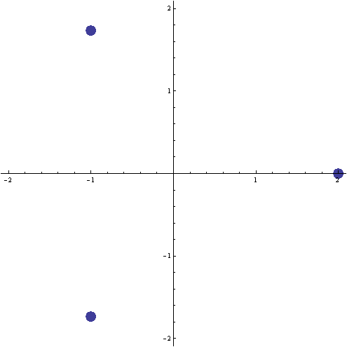

The three cube roots of 8
using Mathematica
NSolve[x^3Š8,x]
{{x®-1.-1.73205 ä},{x®-1.+1.73205 ä},{x®2.}}
N[2*ã(4*ä*p/3) ]
-1.-1.73205 ä
N[2*ã(2*ä*p/3) ]
-1.+1.73205 ä
N[2*ã(0*ä*p/3) ]
2.
ListPlot[Map[{Re[#],Im[#]}&,x/.Solve[x3Š8]],PlotRange®2.1,
AspectRatio®Automatic,PlotStyle®PointSize[0.03]]
